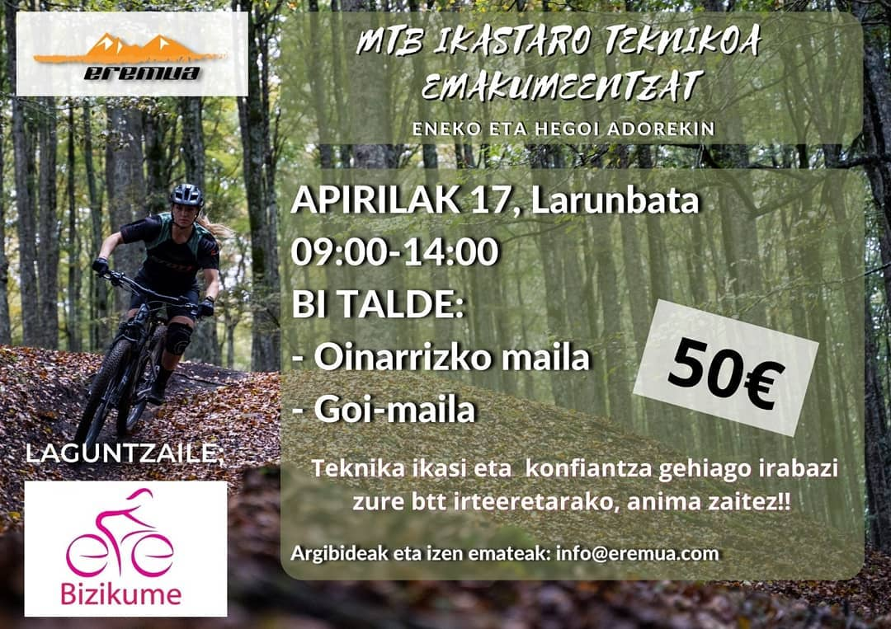
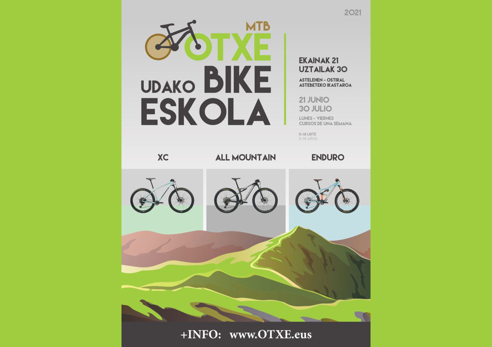
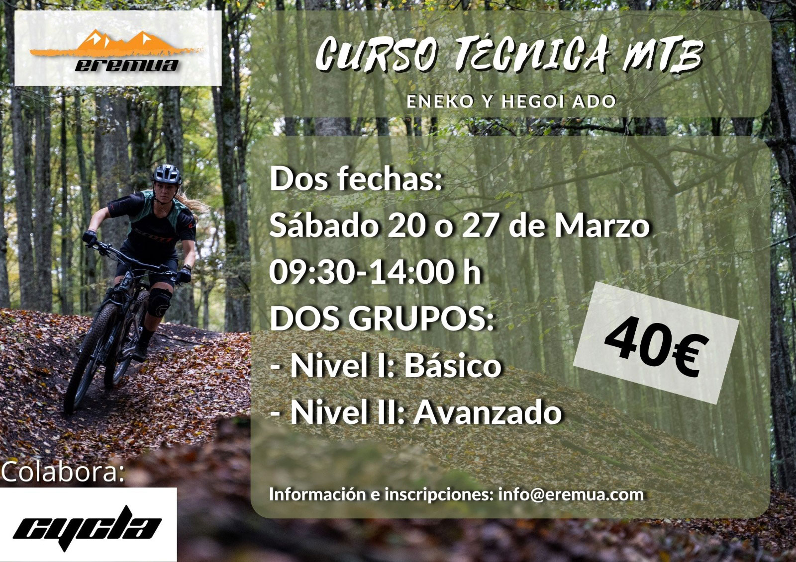
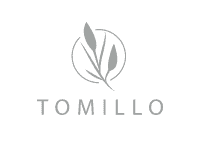
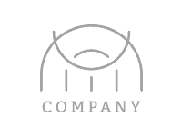
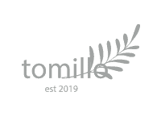
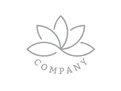
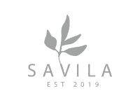

MTB komunitatea
EGINDAKO LANAK
MTB ikastaroak

14/07/2021
EREMUA: MTB Teknika Ikastaroa (2021eko apirilak 17)

13/07/2021
OTXE UDALEKUAK: MTB Bike Eskola (2021eko ekainetik uztailera)

13/07/2021
EREMUA: Curso Técnica MTB (20 o 27 de marzo del 2021)
Honekin egiten dugu lan




